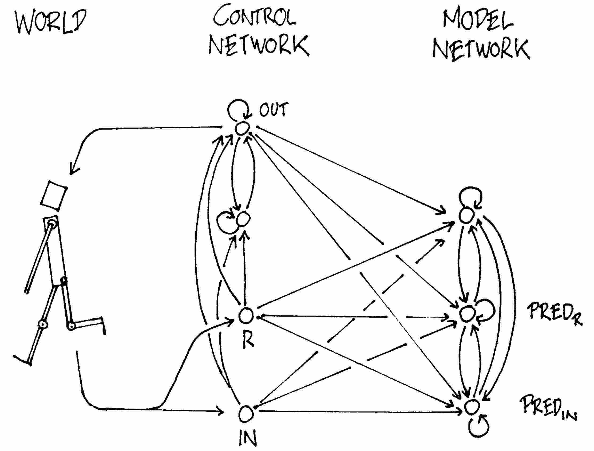
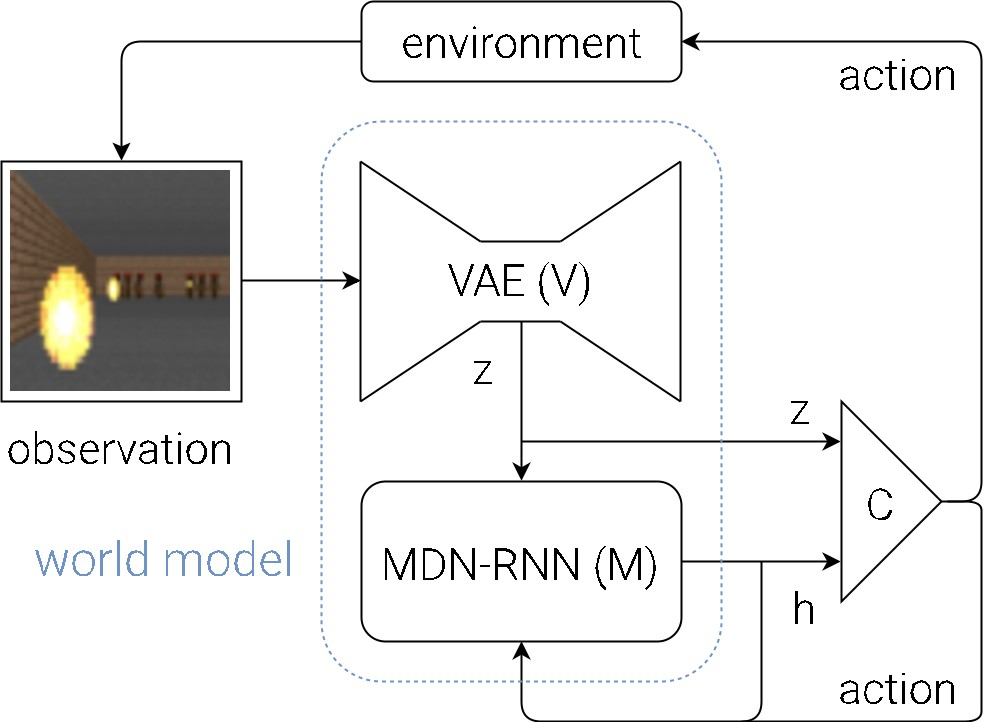
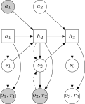
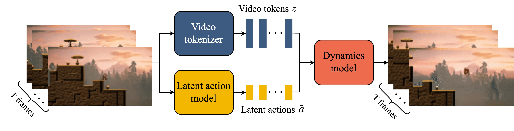

World Models: A Survey of Formulation and Modeling
World models (WMs) have become one of the fastest-moving topics in AI. Drawing on the readings, let me take you on a tour through the thread of AI research, looking back at where world models came from and the advances that shaped them. From there we can build up its formulation step by step, see how these models work, and ask what they are used for.
Prologue
How does each of us, as an individual, view the world? Is the mind a calculating machine? The earliest concept of WM predates AI itself, from a psychologist’s mind. In his book The Nature of Explanation1 (1943), Craik suggested that an organism carrying a small-scale model of external reality in its head can try out alternatives, work out which is best, and act more competently as a result.
“My hypothesis then is that thought models, or parallels, reality—that its essential feature is not ‘the mind’, ‘the self’, ‘sense-data’, nor propositions but symbolism, and that this symbolism is largely of the same kind as that which is familiar to us in mechanical devices which aid thought and calculation.”
“…a process which saves time, expense, and even life”.
Craik tied cognition directly to computation, treating the capacity to model external events as the fundamental feature shared by neural machinery and calculating machines. Five years later, Tolman2 gave the idea an independent empirical anchor: rats implicitly learned detailed spatial maps of their environments, and could exploit them once reward was introduced. This work coined the phrase cognitive map, the psychological precursor to the model-based/model-free distinction in reinforcement learning (RL). Forty years on, Johnson-Laird3 pushed Craik’s hypothesis into a full theory of human reasoning: that people think not by manipulating formal rules of logic, but by constructing a mental model of a situation and scanning it to see what follows.
Strip away eighty years of relabeling (mental model, cognitive map, internal model, world model) and the concept remains: modeling a world we can run forward on its own output, to try alternatives before acting for real.
1. Before Pixels
Many sources attribute the original idea of WM to Schmidhuber in 1990. That paper is well known for training a recurrent neural network (RNN) as a self-supervised, differentiable model of environment dynamics, so a controller can be trained on imagined rollouts. However, I see sparks of the same idea in an older technique, the Kalman filter. For readability, I will also revise the notations to be more up-to-date with modern literature: $s$ for state, $o$ for observation, $a$ for action, etc.
1.1. The Kalman filter
The Kalman filter4 (KF) is a fundamental technique in control theory. It recursively estimates a hidden state by fusing a model-based prediction with a noisy observation, weighting each by its uncertainty. It assumes a linear-Gaussian state-space model: a hidden state $s_t$ evolves under known dynamics $F$, driven by control $a_{t-1}$ via $B$, and is observed only through a noisy, partial sensor $H$.
\[\begin{aligned} s_t &= F s_{t-1} + B a_{t-1} + w_{t-1}, & w_{t-1} \sim \mathcal{N}(0, Q) \\ o_t &= H s_t + v_t, & v_t \sim \mathcal{N}(0, R) \end{aligned}\]Given a belief \(s_{t-1} \sim \mathcal{N}(\hat{s}_{t-1}, P_{t-1})\), the filter alternates two steps, Predict and Update, every timestep. The Predict step runs the model forward to get new estimates:
\[\hat{s}_t^- = F \hat{s}_{t-1} + B a_{t-1}, \qquad P_t^- = F P_{t-1} F^\top + Q\]This is often accompanied by an Update step to correct the estimates against a new observation. Yet, nothing prevents us from skipping Update: we take the uncorrected \(\hat{s}_t^-\) as the belief going into the next Predict step, and repeat, rolling out predictions \(\hat{s}_{>t}^-\) without touching new observations $o_{>t}$. The formulation still aligns cleanly with WM: a state $s_t$ of the world, and a transition model $F$ that can be run without an observation.
Yet for all its elegance, KF is an incomplete WM in the modern sense. Above all, the world state $s_t$ is hand-specified, and in its classical use the dynamics ($F, B, Q$) and sensor model are engineered rather than learned from raw data. And being strictly linear-Gaussian, it cannot handle messier, nonlinear dynamics unless modified as in the extended or unscented KF variants.
1.2. Small models, small worlds

Amidst the second AI winter (1987–1993), a few formulations of WM arrived within two years of each other. Schmidhuber is among the first to formulate a learnable WM explicitly used to train a controller, in a tech report titled Making the World Differentiable5 that went almost unnoticed. He frames the setting as non-Markovian, where:
“[…] at a given time the currently visible part of the world is not enough to make an optimal decision for the next action.”
Such a setting requires a memory to operate on an unbounded window of past inputs (in his flip-flop experiment), or to infer unobserved state, e.g., velocity from a short run of past positions (in his cart-pole experiment).
He operationalizes memory via a recurrent design, trained to predict the next observation. Formally, an RNN world model $\theta_M$ maintains a hidden state $h_{t+1} = f_{\theta_M}(h_t, o_t, a_t)$ via its recurrent cell $f_{\theta_M}$, and predicts the next observation and the reward, \((\hat{o}_{t+1}, \hat{r}_{t+1}) = g_{\theta_M}(h_{t+1})\) via an output head $g_{\theta_M}$ reading off that state. It can be trained via backpropagation through time to minimize the error between estimated and real trajectories:
\[\mathcal{L}(\theta_M) = \sum_t \|\hat{o}_{t+1} - o_{t+1}\|^2 + (\hat{r}_{t+1} - r_{t+1})^2\]The real environment is not differentiable, so the error signal cannot be backpropagated through it to reach the controller. That is what the title points at: the world model $\theta_M$ acts as a differentiable surrogate for the environment. Thus, we can train a controller $\theta_C$ entirely inside the frozen $\theta_M$, letting the gradient of the controller’s objective, such as reward, backpropagate through $\theta_M$ without updating it in the process. This yields an alternation: $\theta_C$ acts in the real environment to generate fresh trajectories, $\theta_M$ is retrained on them, and $\theta_C$ is re-optimized inside the updated $\theta_M$.
Shortly after, Jordan & Rumelhart independently arrived at a similar core WM mechanism with their forward model, as part of their distal supervised learning framework6. They proposed a state-conditioned predictor, \(\hat{o}_t = g(s_{t-1}, a_{t-1})\), trained on the plant’s own outputs. Once fit, it is frozen, and the distal error \(o^* - \hat{o}\) is backpropagated through it to become a usable error for the controller. In this setup, state is directly available as input, so the WM never needs to infer it from a history of observations and has no need for recurrence. In short, both predict the world’s next output, but Schmidhuber backpropagates a reward signal while Jordan & Rumelhart backpropagate the error against a known target.
Concurrently, Sutton’s Dyna7 arrived at a different philosophy: don’t differentiate the model, sample from it. It feeds hypothetical transitions to an RL agent as if they were real experience. The world model $M$ is a look-up table filled from observed transitions, mapping a state-action pair to a predicted next state and reward: \((s_t, a_t) \mapsto (\hat{s}_{t+1}, \hat{r}_t)\). Each cycle takes one real step, obtaining $(s_{t+1}, r_t)$ from the world, then $k$ hypothetical ones: sample a past $(s_t, a_t)$ and query $M$ for its prediction instead. Whether the transition is real or sampled from $M$, the state-value estimate $V$ is updated as:
\[V(s_t) \leftarrow V(s_t) + \beta\left(r_t + \gamma V(s_{t+1}) - V(s_t)\right)\]Unlike the differentiable approaches, Dyna hands credit assignment entirely to whatever RL update is already in use, e.g., the $V(\cdot)$ above, or Q-learning, or any other value-propagation rule. Because that update is a tabular temporal-difference rule, Dyna runs natively on discrete-state problems where backprop doesn’t apply at all. While Dyna in its tabular form could not scale beyond low-dimensional states, it contributes the loop most model-based RL still runs today: collect data, fit a model, then train a policy on rollouts sampled from it.
2. World Models (2018)
While the formulation stayed largely intact, it was not until the era of deep learning that world models were supplied with the machinery to scale to high-dimensional observations, such as images. Ha & Schmidhuber8 (2018) took up world models under a model-based RL framing, where the agent’s competence rests on two things: a compact representation of observations, and a dynamics model that carries history forward. Inspired by our cognitive system, the agent is composed of:
- Vision (V) model to compress current observations into compact latent codes.
- Memory (M) model to predict future codes.
- Controller (C) model to take action based on vision and memory.

2.1. Vision (V) with Variational Autoencoder
As the agent operates in the environment, it receives a 2D image frame as an observation at each time step. The Vision component is tasked to learn an abstract, compressed representation of each observed input frame. Advancements in deep generative modeling, specifically the variational autoencoder9 (VAE, 2013), provide the tool exactly for this task. A VAE is trained to compress data by mapping each input to a probability distribution in latent space, rather than a single point.
For world modeling, the VAE encoder $q_\phi(z \mid o)$ acts as the vision component: it maps observation $o$ to a latent code $z$. A paired decoder $p_\theta(o \mid z)$ reconstructs the input from that code, and the two are trained jointly to maximize the evidence lower bound (ELBO):
\[\mathcal{L}(\theta, \phi; o) = \underbrace{\mathbb{E}_{q_\phi(z \mid o)}\big[\log p_\theta(o \mid z)\big]}_{\text{reconstruction}} - \underbrace{D_{\mathrm{KL}}\!\big(q_\phi(z \mid o) \,\|\, p(z)\big)}_{\text{complexity}}\]The two terms pull against each other: reconstruction wants the code to remember its frame, the KL wants every code to look like plain noise $\mathcal{N}(0, I)$. That design forces the latent space to be smooth and organized, so new realistic data can be sampled from it. The objective only guarantees a code that can rebuild its frame, so whether that code is useful for acting is left to M and C.
2.2. Memory (M) with Mixture Density Network
While the V model compresses what the agent sees at a single instant, the M model compresses how it changes over time. With memory, the agent understands more than a snapshot, and can anticipate instead of react. Formally, it follows a recurrent design that carries a hidden state $h_t$ that summarizes the past, and from it predicts the next code $z_{t+1}$.
A single best-guess code is often the wrong target in stochastic environments with multiple possible outcomes. However, a network trained under squared error learns the conditional average of its targets, i.e., a single “blurred” average of all possible outcomes. Bishop10 (1994) identified this issue and proposed the mixture density network (MDN), which models outputs as differentiable sums of densities. Combined with the recurrent network (MDN-RNN), the recurrent state feeds an output head that emits mixture-of-Gaussians parameters for $z_{t+1}$, conditioned on $z_t$, $a_t$, and $h_t$:
\[p(z_{t+1} \mid a_t, z_t, h_t, \tau) = \sum_{k=1}^{K} \pi_k\, \mathcal{N}\big(z_{t+1};\, \mu_k,\, \tau \cdot \sigma_k\big)\]This allows a rollout to branch into many possible futures rather than collapsing onto one blurred average. Sampling also exposes a temperature $\tau$ that widens or narrows the predicted spread ($\tau > 1$ for more stochasticity)11. Coupled with the V model, the M model completes the agent’s internal world representation.
2.3. Controller (C) with a Simple Linear Layer
Having an accurate model of the world simplifies decision-making. Intuitively, by letting (V) and (M) abstract most of the world’s complexity down to a few hundred dimensions, teaching controller (C) becomes trivial. To test this, Ha & Schmidhuber (2018)8 deliberately made C as simple and small as possible, and trained it separately from V and M. In fact, it is a single linear layer that maps world representations $(z_t, h_t)$ to an action $a_t$ at each time step:
\[a_t = W_c[z_t; h_t] + b_c.\]C is trained to maximize the expected cumulative reward during a rollout of the environment. A small controller enables other training approaches apart from conventional policy gradient methods. Particularly, the evolution strategy CMA-ES12 13, which works well up to a few thousand dimensions, was used to optimize C.
2.4. Putting V, M, and C together
The machine was evaluated on two environments, CarRacing and VizDoom. Training the whole setup is actually straightforward: V, M, and C can be trained individually and sequentially from just 10K rollouts from a random policy. At evaluation, the agent was the first to solve CarRacing, and in VizDoom a controller trained entirely inside M’s dream transferred to the real game, without needing any preprocessing as in previous traditional RL methods.
The ablations also unveil interesting results:
- Omitting the M module in CarRacing heavily handicapped performance, which suggests that memory provides helpful instincts for action.
- Uncertainty is beneficial for generalization (tuning $\tau$ = better, MDN prevents mode collapse), but is also vulnerable to adversarial policy (the agent exploits its blind spots).
- For complex environments, we would like to encourage world exploration via training M and C iteratively (instead of sequentially). This connects to the hippocampal replay in neuroscience literature: the brain replays recent experiences when an animal rests or sleeps.
The 2018 paper marks a cornerstone in the construction of world models. Its design also left room for improvement, which later works in the lineage took up. While V, M, and C are trained separately, an end-to-end framework can let interactions with the world feed back into and improve the vision and memory components. Besides, uncertainty is a single sampling knob $\tau$: the mixture captures the world’s inherent randomness (aleatoric), but nothing tells the model what it simply has not seen yet (epistemic). Moreover, the controller was deliberately tiny to spotlight the world model’s contribution, but it is too limited for learning complex behaviors in richer, more detailed worlds. Finally, the model trained one step at a time yet unrolled for hundreds at inference, a gap it was unprepared for that could deteriorate world quality in complex or long-horizon scenarios.
2.5. Sufficient for What?
The 2018 work packages the formulation into three parts and makes it work from raw pixels. Put simply, a world model is a state of the world and a transition that can be run forward without new observations, plus whatever reads the state to act. But this formulation carries an unstated assumption: the learned state must represent the world well enough for an agent to act, which holds for policy learning in simple environments. As a research question, that invites a follow-up:
what must the learned state be sufficient for?
That question turns out to be the cleanest way to sort through future attempts at formulating a world model, because each sets its own priorities. One lineage directly continues the 2018 formulation: the world state stays in latent as long as it is useful for forward predictions to understand and act in it. Another emphasizes producing actual renderings of a world, faithful enough that humans can evaluate them and policies can train inside them. A different branch wants the world to be structured, i.e., stored as explicit geometry or rules that a physics engine, a 3D editor, or an agent can operate on directly, so it need not be re-derived from pixels at every step. We take them one at a time, to gradually unveil what a world model must hold.
3. A World in Latent
Having built a world model, researchers were intrigued by how to make it more useful and over a longer horizon. This section addresses that problem with related research threads of the 2018 work, where the world remains implicit throughout. We carry a latent state forward, let the model stand in for the missing observations, and change the training signal used to decide what that state should remember.
There was also a practical reason to push in this direction. By 2018, deep RL had become remarkably capable, even surpassing human performance on several benchmarks. But this comes at a formidable interaction cost: Rainbow14 needed 38.6 days of gametime (200 M frames) to learn an Atari game, while OpenAI Five15 consumed 45,000 years of gametime (42.6 trillion frames) to master Dota 2. Model-based RL offered an obvious bargain: you learn the dynamics from real experience, then generate abundant synthetic experience from that single learned model. Especially using a world model, synthetic experience costs orders of magnitude less to generate, since it unfolds in compressed latent space instead of pixels.
3.1. PlaNet: a stateful latent
World Models (2018) trains representation, dynamics, and control as separate modules. That keeps the approach simple, but nothing ensures the learned model stays useful for the long-horizon prediction and planning that control needs. PlaNet16 closes this gap with a model that keeps what matters for future decisions, stays reliable over many steps, and represents uncertainty and hidden information.

Its core is the recurrent state-space model (RSSM), which builds on earlier deep state-space models17 18: a compact state that absorbs new observations during interaction, yet keeps evolving when none arrive. The state has a deterministic recurrent part $h_t$ that carries the past, and a stochastic part $z_t$ that represents uncertainty and allows multiple futures:
\[s_t = (h_t, z_t), \qquad h_t = f_\theta(h_{t-1}, z_{t-1}, a_{t-1}).\]The posterior $q_\phi(z_t \mid h_t, o_t)$ infers the latent state from the current observation, while the prior $p_\theta(z_t \mid h_t)$ predicts it from history alone. During interaction, the posterior absorbs each new observation. During imagination, the prior takes over, so the sequence continues without querying the environment. These are the Update and Predict steps of the Kalman filter, learned from data instead of specified by hand.
PlaNet’s variational objective has two parts: a reconstruction term that asks the latent to explain observations and rewards, and a complexity term that keeps the posterior close to what the prior predicts:
\[\mathcal{L}(\theta,\phi) = \mathbb{E}_{q_\phi} \Bigg[ \sum_{t=1}^{T} \bigg( \underbrace{-\log p_\theta(o_t,r_t \mid h_t,z_t)}_{\text{reconstruction}} + \underbrace{ D_{\mathrm{KL}} \left( q_\phi(z_t\mid h_t,o_t) \,\|\, p_\theta(z_t\mid h_t) \right) }_{\text{complexity}} \bigg) \Bigg].\]Together, they encourage a state that explains current experience and stays predictable without observations. The objective can also be extended to multiple imagined steps, a technique known as latent overshooting. Unlike in 2018, the latent is no longer simply a compressed observation: it is built to let the dynamics continue the trajectory.
For control, PlaNet skips the separate controller and searches action sequences in latent space for the highest predicted return:
\[a_{t:t+H}^{*} = \arg\max_{a_{t:t+H}} \mathbb{E} \left[ \sum_{k=0}^{H} r_{t+k} \right].\]It approximates this search with the cross-entropy method (CEM)19: sample candidate sequences, score their imagined returns, and narrow the search around the best. Only the first action is executed before the new observation updates the latent state and planning restarts. The model now connects directly to control, but every real timestep needs a fresh search over thousands of imagined sequences, so action selection stays an explicit search.
3.2. Dreamer: gradients through the dream
PlaNet made the latent state useful for prediction and planning. Hafner’s follow-up, Dreamer20, asks the next question:
What if that same latent state were sufficient to learn the policy itself?
Instead of searching whenever it must act, Dreamer learns an actor that maps latent states to actions and a critic that estimates their future return. Imagined rollouts start at step $t$ from states sampled from replayed experience and run for $H$ steps, with the actor choosing actions and the learned model producing the trajectories. Because these rollouts stay in latent space, the policy learns without touching the environment.
\[\text{Actor:}\quad a_j \sim \pi_\xi(a_j \mid s_j), \qquad \text{Critic:}\quad v_\psi(s_j) \approx \mathbb{E} \left[ \sum_{j'=j}^{t+H} \gamma^{j'-j} r_{j'} \right]\]What matters is not the actor-critic split but what it is placed inside. In Dreamer, imagined rollouts are differentiable, so gradients of the predicted return pass back through the latent states into the actor. The policy thus learns from the consequences of its actions inside the model, amortizing planning into the policy, and imagination becomes a source of training experience.
The imagination horizon $H$ is part of the approximation: longer rollouts expose more delayed consequences, but give model error more room to accumulate. Dreamer therefore uses a finite horizon and bootstraps the rest with the critic:
\[V^\lambda_j = \hat{r}_j + \gamma \begin{cases} (1-\lambda)v_\psi(s_{j+1}) + \lambda V^\lambda_{j+1}, & j < t+H, \\[4pt] v_\psi(s_{t+H}), & j = t+H. \end{cases}\]Here $\hat{r}_j$ is the reward the model predicts, and $\lambda$ blends short and long bootstrapped returns. A short imagined trajectory is enough for a learning signal, with the critic estimating what lies beyond. This gives Dreamer its loop: collect real experience, learn a world model, imagine futures, improve the policy. One real experience supports many imagined trajectories.
In future versions, DreamerV221 scales the recipe to harder visual control by replacing continuous latents with discrete categorical ones and adding KL balancing. It reaches human-level play on Atari with behavior learned entirely inside the world model. For discrete actions, it trains the actor with REINFORCE-style gradients in place of backpropagating through the model. DreamerV322 asks about generality: can one recipe stay stable across very different environments, reward scales, and dynamics? It keeps the imagination loop and makes the objectives robust through normalization, balancing, and transformed targets, and with a single configuration performs across more than 150 diverse tasks. DreamerV423 changes the scale: can much of the world be learned from broad experience rather than task-specific data? Its Transformer world model learns from diverse unlabeled video and gets action conditioning from comparatively little task data. In Minecraft, it obtains diamonds from offline data alone.
Across the lineage, the sufficiency requirement keeps expanding: the latent begins as a compact predictive state, becomes a medium for differentiable policy learning, and is pushed toward harder control, broader tasks, and larger-scale experience. The bargain stays constant: the world can stay implicit as long as the latent preserves enough for imagination to yield useful learning signals. But this is not the only way to answer what a world model needs to preserve. Another sub-branch takes the opposite view: perhaps the best world model is the one that models less.
3.3. MuZero: a world seen through value
Dreamer still keeps a decoder, which shapes the latent by asking it to reconstruct observations. MuZero24 removes it and asks the latent to be right only about what planning needs. Three learned functions replace the reconstruction. A representation function encodes the observation history into a latent state, a dynamics function advances that state under an action and predicts the immediate reward, and a prediction function reads a policy and a value off each state.
Planning is a Monte Carlo tree search that runs entirely through these functions. Because the search never touches the real environment, the latent states need not resemble it, only predict accurate rewards, values, and policies. Training unrolls the model $K$ steps from each real timestep $t$, and the only signal is whether the predicted rewards $r_t^k$, values $v_t^k$, and policies $\mathbf{p}_t^k$ match what experience and search later report: the observed reward $u$, a bootstrapped $n$-step return $G$, and the search policy $\pi$.
\[l_t(\theta) = \sum_{k=0}^{K} \Big[ l^r(u_{t+k}, r_t^k) + l^v(G_{t+k}, v_t^k) + l^p(\pi_{t+k}, \mathbf{p}_t^k) \Big] + c\|\theta\|^2.\]MuZero set a new state of the art on Atari and matched AlphaZero on Go, chess, and shogi without being given the rules. The principle behind this formulation is value equivalence25. A model only needs to match the world on what planning uses, i.e., the value backups, and may differ everywhere else. That frees capacity in a small model, though more policies and value functions demand more of the latent. MuZero approximates this by fitting values along the data it sees.
This comes at a cost, though. A latent shaped only by reward and value gets little signal when reward is sparse, and internet video has no reward at all, so the approach is hard to apply to the video-scale learning that DreamerV4 targets. So far it has mostly been used where a reward signal is available. Several follow-ups add other training signals. EfficientZero26 adds a self-supervised consistency loss that pulls each predicted next latent toward the encoding of the real next observation, with a stop-gradient on the target, so the latent keeps learning even when reward is silent. TD-MPC227 adds a similar joint-embedding prediction term next to its reward and value terms, but descends from TD-MPC rather than MuZero and plans with MPPI, a CEM-like sampling planner, instead of tree search. UniZero28 targets a different limit, the short memory of a one-step latent, and swaps in a transformer so the latent can condition on a longer history. In short, all of them keep the world in a latent and learn it mainly from reward and value, with a self-prediction term added in EfficientZero, TD-MPC2, and UniZero.
3.4. JEPA: a latent late game
MuZero drops the decoder but keeps reward and value as the training signal. Joint-embedding predictive architectures (JEPA)29 take the latent branch’s furthest step: they drop the decoder and make prediction in representation space the whole objective. The argument is that predicting pixels forces a model to account for granular and possibly irrelevant details, such as the exact texture of a leaf in the wind. A JEPA instead encodes both the context $x$ and the target $y$, and trains a predictor $P$ to match the target’s representation from the context’s. The predictor may take an extra input $\Delta$ that carries what $y$ has and $x$ lacks, such as which part to predict:
\[\mathcal{L} = D\big(P(E(x),\, \Delta),\, E(y)\big),\]where $E$ is the encoder and $D$ a distance. The difference from what came before is one of emphasis. Dreamer’s KL term and the consistency losses of EfficientZero and TD-MPC2 already ask the latent to be predictable, but as a helper to reconstruction or to value. A JEPA makes it the main job.
This invites an obvious failure: if the encoder maps everything to a constant, the prediction error is zero. V-JEPA 230 guards against it with an exponential-moving-average (EMA) copy of the encoder that produces the targets, and a stop-gradient on that branch, in a masked-prediction objective for pretraining that instantiates the loss above:
\[\min_{\theta, \phi, \Delta_y} \; \big\| P_\phi\big(\Delta_y,\, E_\theta(x)\big) - \mathrm{sg}\big(E_{\bar\theta}(y)\big) \big\|_1,\]where $x$ is the visible part of a video, $y$ the full clip, $\Delta_y$ a set of learnable mask tokens that mark which patches to predict, $\mathrm{sg}$ the stop-gradient, and $\bar\theta$ the EMA of $\theta$. The loss is taken only on the masked patches. These devices are heuristics, and LeJEPA31 offers a more principled alternative. It argues that, when the downstream task is unknown, an isotropic Gaussian embedding minimizes worst-case prediction risk. It enforces that distribution with a regularizer (SIGReg), so that its image experiments need no stop-gradient or teacher-student pair. Whether the same holds for a video world-model latent is not yet shown.
The same encoder also serves as a world model. V-JEPA 2 is pretrained on over a million hours of action-free internet video. It is then post-trained on a small amount of robot video from the Droid dataset to condition on actions, with an $L_1$ loss between its predicted and the encoded representations of the next frames. To act, it plans: it searches action sequences with the cross-entropy method, as PlaNet did, scoring each by the $L_1$ distance between its predicted representation and that of a goal image. It was deployed zero-shot on Franka arms to pick and place objects, with no data from those environments and no reward, only a goal image to say what to do. DINO-WM32 keeps the idea but never trains a video encoder: it trains only a predictor on frozen DINOv2 patch features, from offline trajectories alone, and plans in that space. JEPA’s sufficiency for control is so far shown empirically rather than argued. Side by side, the three flavors ask the latent to be sufficient for different things: reconstructing observations (Dreamer), supporting value and policy predictions (MuZero), or predicting other representations (JEPA).
4. Rendering the World
The lineage in the last section kept the world hidden in a latent state and trusted it to hold whatever mattered. Another lineage answers the sufficiency question the other way: render the world as pixels, so that people can judge it and agents can train inside it. The idea is old, since learning to predict the next frame from earlier frames and the action predates the 2018 formulation. It works far better today because generative models matured in between, from VAEs and GANs to diffusion models. We follow it from the first blurry frames to renderers that can remember their past.
4.1. A blurred future
In 2015, a network for action-conditional video prediction33 learned to predict Atari frames from past frames and actions, with an encoder, an action-conditioned transition, and a decoder. The network’s rollouts stayed useful for about a hundred steps, but the loss was squared error, and, as with any squared-error loss, the network learns the conditional average of all outcomes. A mixture density network fixed that in latent space. In pixels, the average of several futures is simply a blurred image. In 2016, multi-scale video prediction34 changed the loss itself, with a network that predicts at several resolutions, an adversarial term, and an image-gradient loss that penalizes lost edges. The frames got sharp, but the model still committed to a single future.
The stochastic video models gave the renderer a random variable. SV2P35 adds a latent variable that, once sampled, decides how the future unfolds, so each sample yields a different plausible rollout. SVG36 learns that variable’s prior from the past frames and combines each sample with a deterministic prediction of the next frame. Its objective is the ELBO, summed over the frames $o_1, \dots, o_T$ of a video:
\[\begin{aligned} \mathcal{L}_{\theta,\phi,\omega} = \sum_{t=1}^{T} \Big[ &\mathbb{E}_{q_\phi(z_{1:t} \mid o_{1:t})} \log p_\theta(o_t \mid o_{1:t-1}, z_{1:t}) \\ &- \beta\, D_{\mathrm{KL}}\big(q_\phi(z_t \mid o_{1:t}) \,\|\, p_\omega(z_t \mid o_{1:t-1})\big) \Big] \end{aligned}\]The posterior $q_\phi$ sees the true frame $o_t$, the learned prior $p_\omega$ sees only the frames before it, and $\beta$ weighs the KL term. Unlike the fixed $\mathcal{N}(0, I)$ in VAE, this prior changes with the past frames. The frame predictor $p_\theta$ is a recurrent network that takes the previous frame and the sampled $z_t$, and is trained with squared error. Because $z_t$ tells it which future to draw, that error no longer pulls it toward the average of all futures. It is the same idea in spirit as the mixture density network, moved from latent codes to frames: sample first, then render. GameGAN37 pushed it to a playable simulator, an adversarially trained renderer (generator) of game screens driven by keyboard input. Sharp, varied frames are good enough to look at. The next question is whether they are good enough to learn from.
4.2. Frames to learn from
SimPLe38 uses a video prediction model as the environment: it alternates between collecting a little real experience, fitting the model, and training a policy entirely on rollouts inside the predicted frames. On Atari, with a budget of only 100k real interactions, that policy still worked in the real game and, in most games, beat the model-free methods.
The next gains came from making the generator itself more expressive. IRIS39 turns each frame into a short sequence of discrete tokens with a discrete autoencoder, VQ-VAE40, so that a GPT-style transformer can model frames like words. The autoencoder is trained with the loss:
\[\begin{aligned} \mathcal{L}_{\text{AE}} = {} & \|o - \mathrm{Dec}(z)\|_1 + \|\mathrm{sg}(\mathrm{Enc}(o)) - e(z)\|_2^2 \\ & + \|\mathrm{sg}(e(z)) - \mathrm{Enc}(o)\|_2^2 + \mathcal{L}_{\text{perc}}(o, \mathrm{Dec}(z)) \end{aligned}\]Here $z$ are the token indices of frame $o$, $e(z)$ the codebook vectors they point to, and $\mathrm{sg}(\cdot)$ is the stop-gradient. The first and last terms ask the decoded frame to match the input, in pixels and in perceptual features. The middle two pull the codebook vectors and the encoder outputs toward each other. The transformer then reads the token stream interleaved with the actions, and predicts the next frame’s tokens, the reward, and the episode end, trained with cross-entropy like a language model. Its state is just a window of recent history, and the agent trains on the model’s imagined rollouts, as in Dreamer.
In contrast, DIAMOND41 argues that compressing a frame into a compact discrete code can drop visual details that matter to a reinforcement learning agent. It denoises directly in pixel space with a diffusion model, so the agent trains in rendered frames at full detail. A denoiser $D_\theta$ learns to recover the next frame $o_{t+1}$ from a copy $\tilde o_{t+1}$ with Gaussian noise of level $\kappa$, given the past frames and actions:
\[\mathcal{L}(\theta) = \mathbb{E}\Big[\big\| D_\theta(\tilde o_{t+1}, \kappa, o_{\le t}, a_{\le t}) - o_{t+1} \big\|^2\Big]\]In practice the past is a short window of recent frames and actions. $D_\theta$ wraps the network in scalings that depend on $\kappa$, so the network’s target mixes the clean frame and the noise. Both are still trained on one game’s own experience, one world at a time.
4.3. Where actions come from
The next step changes what the renderer is trained on. Videos are abundant on the web, but almost none of them come labeled with the actions that produced them. Video generators trained at large scale, Sora42 among them, learn to render from a text prompt, and OpenAI presented them as world simulators. A renderer that only reads a prompt, though, has no way to ask what happens if we act.

Genie43 supplies the missing controls by learning them from the footage itself. A latent action model looks at a stretch of frames and the one after, and names the change with one of a few learned codes (eight in the paper). Its encoder reads the frames $o_{1:t}$ and the next frame $o_{t+1}$, and a VQ codebook maps each output to the nearest code $\tilde a$. Its decoder must rebuild $o_{t+1}$ from the past frames and those codes alone, under a VQ-VAE objective as in IRIS:
\[\tilde a_{1:t} = \mathrm{VQ}\big(\mathrm{Enc}(o_{1:t}, o_{t+1})\big), \qquad \hat o_{t+1} = \mathrm{Dec}(o_{1:t}, \tilde a_{1:t})\]Because the decoder gets nothing from the future except $\tilde a_t$, that code has to carry the most meaningful change between past and future. A dynamics model then learns to render the next frame from the past frames and that code, so the codes act as the controls the data never had. It works on the tokens $z$ of a separate video tokenizer and learns MaskGIT-style. Random tokens of $z_t$ are masked, and cross-entropy trains the model to predict them from $z_{1:t-1}$ and $\mathrm{sg}(\tilde a_{1:t-1})$. UniSim44 pursues the same goal by orchestrating many datasets, each supplying a different aspect of experience, so that one simulator can follow both text instructions and low-level controls. Cosmos45 makes the recipe explicit: pretrain once on curated video, then post-train into specialists. Its successor Cosmos 346 combines language, video, and action in one model, with an autoregressive tower for understanding and a diffusion tower for generation. The model can run forward dynamics (action to next frame), inverse dynamics (frames to action), or joint video-and-action prediction.
Genie infers actions from video without labels. Robot data does carry action labels, and a video model can use them to predict actions as well. DreamZero47 predicts actions this way, on top of a pretrained image-to-video diffusion model. It factors the joint distribution of the next $H$ frames $o$ and actions $a$ into two parts, given the past frames, an instruction $c$, and the robot’s state $q_t$. One part predicts the video. The other is an inverse-dynamics model that infers the actions from the predicted video:
\[p(o_{t+1:t+H}, a_{t+1:t+H} \mid o_{\le t}, c, q_t) = p(o_{t+1:t+H} \mid o_{\le t}, c, q_t)\; p(a_{t+1:t+H} \mid o_{\le t+H}, q_t)\]One network learns both parts at once. Training adds noise to the video latents and the actions together, chunk by chunk, with one noise level $\kappa_k$ shared inside each chunk $k$. With $x^k = [z^k, a^k]$ stacking the clean latents and actions of the chunk, the noised input is $x^k_{\kappa_k} = (1-\kappa_k)\,x^k + \kappa_k\,\epsilon^k$ for Gaussian noise $\epsilon^k$. The network $u_\theta$ predicts the velocity $v^k = x^k - \epsilon^k$, given the clean earlier chunks $\mathcal{C}_k$, which hold the latents and actions of chunks $1$ to $k-1$:
\[\mathcal{L}(\theta) = \mathbb{E}\Big[\tfrac{1}{N}\sum_{k=1}^{N} w(\kappa_k)\,\big\| u_\theta\big(x^k_{\kappa_k};\, \mathcal{C}_k, c, q_k, \kappa_k\big) - v^k \big\|^2\Big]\]Here $N$ is the number of chunks, $q_k$ is the robot’s state at the start of chunk $k$, and $w$ is a weight on the noise level. At run time, after each executed action chunk, the real camera frame replaces the generated frame in the stored context. This helps keep errors from compounding over a rollout. The predicted video also acts as a plan that the actions follow. DreamZero is so far an arXiv preprint, and its robot results come from the authors’ own tests.
4.4. Long rollouts, short memories
A renderer that works frame by frame conditions on its own earlier frames, and during training those frames were always clean, so a long rollout is where trouble starts. At test time they are not: small errors enter the context, feed back into the next frame, and compound into rapid degradation. GameNGen48 applies a fix. It trains a diffusion model on recorded play of reinforcement learning agents to generate the next frame of DOOM from past frames and actions, in place of the game engine. It denoises in an autoencoder’s latent space, with the past latents concatenated to the noisy one and each past action embedded as $A_{\mathrm{emb}}(a)$:
\[\begin{aligned} \mathcal{L} = \mathbb{E}\Big[\big\| & v(\epsilon, z_0, \kappa) - v_\theta\big(z_\kappa, \kappa, \{\mathrm{Enc}(o_{i<t}) + \eta\,\epsilon_i\}, \\ & \{A_{\mathrm{emb}}(a_{i<t})\}, \mathrm{emb}(\eta)\big) \big\|_2^2\Big] \end{aligned}\]Here $z_0 = \mathrm{Enc}(o_t)$ is the latent of the frame to generate, and $z_\kappa$ is that latent noised with $\epsilon$ to diffusion step $\kappa$. The network $v_\theta$ predicts the velocity target $v$, a mix of the clean latent and the noise. The fix sits in the context: each past latent gets Gaussian noise $\eta\,\epsilon_i$, with the strength $\eta$ sampled uniformly up to a maximum. The model receives $\eta$ as a learned embedding $\mathrm{emb}(\eta)$. The model learns to repair imperfect context, which is what its own rollouts give it, and play stays stable for minutes.
Still, stable play is not memory: a model with a short context window, such as GameNGen’s last 64 frames, cannot recall a room that left the screen. Genie 249 remembers parts of the world that are out of view and renders them accurately when they return, and Genie 350 extends this to about a minute of visual memory. Its authors describe the consistency as emergent, without an explicit 3D model of the scene behind it. They do not disclose the exact mechanism, though attention over a long window of past latent frames was the likeliest approach then. WorldMem51 makes the memory explicit instead: it keeps a bank of past frames together with their poses and timestamps, and an attention step retrieves the ones relevant to the current viewpoint. Runs longer than a minute now exist: LingBot-World 2.052 reports a single session of over an hour. Its authors note that the model tends to regenerate, not recall, a revisited region that left its context window.
GEN3C53 keeps the memory as 3D geometry. It unprojects the estimated depth of the seed image, and later of each generated frame, into a colored point cloud. This point cloud is GEN3C’s 3D cache. For a requested camera path, it renders the cache into an image $I$ and a mask $M$ for each frame. The mask is 1 where the cache covers a pixel and 0 where it does not. A video diffusion model, fine-tuned with the usual denoising loss on ground-truth videos, fills in those holes. The render enters at the model’s first layer. There, the model concatenates the render’s encoding, zeroed where the cache has no coverage, with the noisy latent:
\[z' = \mathrm{In}\big(\mathrm{Concat}(\mathrm{Enc}(I) \odot M',\, z_\kappa)\big)\]Here $\mathrm{In}$ is that first layer, $\odot$ is the element-wise product, and $M’$ is $M$ min-pooled to latent resolution, so a latent cell survives only if the cache covers all its pixels. GEN3C still has the video model draw every frame, and it follows camera paths, not actions.
None of these fixes makes the renderer follow the world’s rules. A controlled study54 trained video models on simulated 2D physics and found that they fit what they had seen and, with more scale, recombined it. They failed on cases outside the training data, where they fell back on the closest example they had seen. Scale alone did not teach the underlying laws, so a convincing rendering is not evidence that the physics is right. Another branch stops asking the renderer to remember the world and stores it instead, as the state rather than as a memory aid.
5. World Structure by Design
The last section ended with WMs that hold a room in memory for about a minute, yet remain prone to breaking rules, because they must learn from pixels what a room and a rule are. The structured branch hands that knowledge over instead. It does so in two steps: first the state, stored as geometry, which answers the room problem, and then the transition, written down as code, which answers the rule problem. In both steps the designer answers part of the sufficiency question before training starts. The cost is that the world has to fit the form the designer chose.
5.1. State as geometry
To see what storing the state as geometry means, we start with methods that reconstruct complex scenes. None of them is a world model, since they cannot predict how the scene changes. Yet they make a good substrate for learning that transition: the state is explicit and made of parts, so a transition has something concrete to move.
NeRF55 stores a scene as a neural network that maps a position and viewing direction to a color and density, fitted to posed photos of that scene. A pixel’s color blends the colors along its camera ray, weighted by density and by the light that survives to each point. Training minimizes the squared error against the photographed pixel. A NeRF-based world model is compositional NeRF dynamics56, which gives each object its own NeRF latent. The action is a rigid transform of the pusher’s latent, and a graph network predicts how the other objects’ latents react.
Instead of a network, 3D Gaussian splatting57 (3DGS) stores a scene as a large set of colored 3D Gaussians that can rasterize efficiently. Each has a mean, an opacity, a view-dependent color $\mathbf{c}_i$, and a covariance $\Sigma$. The covariance is built from a rotation $R$ and a scaling $S$, so it stays valid during gradient descent. To render, it projects the Gaussians onto the image, sorts them by depth, and blends them front to back into the pixel color $C$:
\[\Sigma = R S S^\top R^\top, \qquad C = \sum_{i} \mathbf{c}_i\, \alpha_i \prod_{j<i} (1 - \alpha_j)\]Here $\alpha_i$ is the learned opacity times the projected 2D Gaussian at that pixel. Training again compares renders with the photographed pixels, through an L1 loss plus a structural-similarity term (D-SSIM).
The Gaussians need not come from photographs: Lyra58 distills GEN3C’s video model into a 3D Gaussian scene. A second decoder outputs the Gaussians. Training makes their renderings match the video model’s own frames and depth maps from an off-the-shelf estimator, so it needs no captured multi-view data. Once the Gaussians exist, Lyra renders from them without the video model. Lyra 2.059 keeps a per-frame geometry cache of depth, camera pose, and a point cloud. It uses the cache only to retrieve the past frames that overlap the target view, and the video model still draws every frame. It also trains on its own degraded outputs to correct drift. Neither follows actions, only camera paths, and nothing in their geometry predicts how the scene changes.
Predicting that change is the missing piece. Because Gaussians can be moved and rendered, a predicted motion can be checked against the next frame. ManiGaussian60 lifts an RGB-D image to 3D Gaussians and predicts how the robot’s action moves them, changing only positions and rotations. Its prediction is an auxiliary loss for a policy trained at the same time. GWM61 encodes a scene as 3D Gaussians and trains a diffusion transformer to predict how they propagate under the action, so the model works as a neural simulator for training policies. Graph-based neural dynamics62 takes another route: it tracks Gaussians through videos and keeps a sparse set of control particles. A graph network learns how the particles move under the action, and the Gaussians follow them.
LiDAR, a laser sensor, measures 3D directly, and its scans are point clouds of nearby surfaces. Tokenized like video frames, they can be modeled by a sequence model together with the actions. Copilot4D63 tokenizes the scans on a top-down grid and predicts the next scan’s tokens with a diffusion model. The inputs are the past tokens and the car’s own poses (position and heading), which stand in for actions. With $z^{(t)}$ the tokens of scan $t$ and $a^{(t)}$ the pose, it maximizes
\[\sum_t \log p_\theta\big(z^{(t)} \mid z^{(1)}, a^{(1)}, \dots, z^{(t-1)}, a^{(t-1)}\big)\]Each factor is fit by discrete diffusion, which learns to recover masked and randomly corrupted tokens given the past. OccWorld64 changes the geometry: it tokenizes occupancy, a grid of 3D cells marked free or occupied. A transformer then generates tokens for the scene and for the car together, so one rollout yields both the future scene and the car’s trajectory.
5.2. Rules as code
Geometry makes the state explicit, but its transition is still learned. The second step makes the transition explicit too, as code. Unlike a learned transition, a rule in code can be easily read, tested, and edited.
WorldCoder65 has a language model write the world model as a Python program, test it against what the agent has observed, and rewrite it where it fails. To choose what to test, the agent is optimistic: it invents rewards it believes it can reach and explores toward them. A new environment means editing the code, not starting over. PoE-World66 scales this by breaking one large program into hundreds of small ones, each a function for one rule (touching a skull kills the player). It multiplies their predictions with learned weights, so an outcome counts only if every rule allows it:
\[p_\theta(o_{t+1} \mid o_{1:t}, a_{1:t}) \propto \prod_i p_i(o_{t+1} \mid o_{1:t}, a_{1:t})^{\theta_i}\]where $p_i$ is the $i$-th program’s prediction, $\theta_i$ its weight, and $o$ a list of objects and their attributes, not a frame. The product is normalized per attribute to keep the likelihood tractable. The weights are fit by maximum likelihood with L-BFGS and an L1 penalty, and rules whose weight ends below a small threshold are pruned.
Code World Model67 keeps the rules in code and adds a video model to show the result. A coding agent, the “world brain”, reasons about events and their consequences and writes the code that keeps the state and its evolution consistent with the rules. The code is compiled into a proxy video that spells out what each frame must contain. A video model, fine-tuned on paired gameplay data, then renders the final frames from it. The renderer is still learned, so the handover is partial. It fits only worlds whose rules a few lines can state, so the testbeds are mostly games, and coding agents still struggle with complex mechanics.
6. Applications
The branches so far were judged on their own terms. Here we look at what people and systems do with world models downstream. Many of these uses are early and shown only in research settings, but they point the same way: less trial and error in the real world.
6.1. Decision-making
MuZero began on board games and Atari. Robot learning is the closest new user, since an imagined rollout needs fewer real interactions, though not necessarily less compute. Planning needs rollouts that follow the action and arrive fast enough, with a fallback when the imagined outcome is wrong. DayDreamer68 runs Dreamer online on physical robots, among them a quadruped and robot arms. V-JEPA 2 and DINO-WM plan toward goal images, GWM trains manipulation policies, DreamZero predicts video and actions together, and Navigation World Models69 plans navigation paths. Another line uses generated video as the plan: UniPi70 generates a video of the task and recovers the actions from it, RoboDreamer71 composes language instructions into imagined rollouts, and GR-172 pretrains on video generation before learning manipulation. Driving planners imagine ahead too: Drive-WM73 forecasts multi-camera views to choose a trajectory, and Drive-OccWorld74 plans on forecast occupancy. WebDreamer75 brings the same idea to language agents: a language model predicts what each candidate action would do to a web page before taking it.
6.2. Simulation
A world model that imagines well enough for planning can also replace the environment, and then it must rank policies as reality would. In robotics, WorldEval76 ranks manipulation policies inside a generated world, with rankings that track real-robot results, and Ctrl-World77, Genie Envisioner78, and IRASim79 offer controllable simulators for manipulation. Checking such a simulator means comparing its policy rankings with real-world results, not scoring its frames. As the rendering branch showed, a world that looks right can still be wrong about the physics. Driving follows the same path: GAIA-180 generates controllable driving scenarios for training driving systems, and GAIA-281 generates scenes for developing and simulating them. In surgery, SAW82 generates video conditioned on tool trajectories and Surgical Vision World Model83 on latent actions learned from unlabeled footage, which makes surgical video generation controllable. Generated worlds also serve as practice grounds: SIMA 284 was run inside Genie 3 worlds it had never seen. Beyond physical settings, Generative Agents85 fill a sandbox town with language-model characters, and MarS86 simulates the order flow of a financial market. Generative Agents and WebDreamer use language models as the simulator, which stretches this post’s definition of a world model.
6.3. Data synthesis
A world model can also make training data for other models, which helps most where real data is scarce or risky to collect. It helps only if the data stays diverse and correctly labeled. DreamGen87 generates robot videos in new settings and recovers actions from them, and GigaWorld-088 is built as a data engine for robot learning. Driving has the longest list. DriveDreamer89 synthesizes scenes from structured controls such as maps and boxes, DriveDreamer-290 adds a language model that turns a text request into the layouts, Panacea91 generates annotated multi-camera video, and MagicDrive92 accepts camera, road, and box controls. OccSora93 generates occupancy sequences, and GAIA-2 targets rare situations. Cosmos and UniSim aim the same idea at physical-world data more broadly, and SAW at augmenting surgical training data.
6.4. Interactive media
The last user is a person, and the world has to stay playable. Genie 2 and 3 turn a prompt into a playable world, and GameNGen replaces a game engine outright. WHAM94 helps game designers ideate gameplay. GameGen-X95 generates open-world game video, MineWorld96 and Matrix-Game97 target Minecraft, and GameFactory98 creates new games.
If any of these uses caught your interest, the surveys below are good places to go deeper. Ding et al.99 cover the field broadly, Hou et al.100 focus on robot learning, Zidan et al.101 reach into medicine, education, and finance, and Chu et al.102 look at agentic settings.
Conclusion
A world model keeps a state that can be run forward without new observations. The branches differ in what they ask that state to be sufficient for. The latent branch asks the state to be enough for prediction, value, or representation, and learns everything else. The rendering branch asks for more: a state that a person can judge and an agent can train in. It gets that by giving up memory and the rules of the world. The structured branch takes the opposite route: it fixes part of the state or the rules by design. This works only in a world that fits that form.
This survey is a snapshot of a fast-moving field, but these are the limits I see still open. Stored as geometry, a place can now be revisited and look the same, but change over time is still hard: doors open, objects move, and small errors add up over a long rollout. Models can still break rules that a picture hides, and on a physics benchmark, video models scored far below real footage.103 Most video models follow camera paths or coarse controls, and they tend to struggle first with actions not seen in training. We also have no agreed way to tell a good world model from a bad one, since looking right, finishing a task, and following the rules do not always go together. Finally, training and running these models is costly, and data with high-quality action labels is scarce.
The branches began apart, but newer work already mixes them. Video models now take actions, and geometry and code are being paired with video. It has been pure joy putting this map together, and if, by any chance, it makes the next paper you read easier to place, I will be glad.
References
-
Craik, K. J. W. (1967). The nature of explanation. Cambridge University Press. (Original work published 1943) ↩
-
Tolman, E. C. (1948). Cognitive maps in rats and men. Psychological Review, 55(4), 189-208. ↩
-
Johnson-Laird, P. N. (1983). Mental models: Towards a cognitive science of language, inference, and consciousness (No. 6). Harvard University Press. ↩
-
Kalman, R. E. (1960). A new approach to linear filtering and prediction problems. Journal of Basic Engineering, 82(1), 35-45. ↩
-
Schmidhuber, J. (1990). Making the world differentiable: on using self supervised fully recurrent neural networks for dynamic reinforcement learning and planning in non-stationary environments. Technical Report FKI-126-90, Institut für Informatik, Technische Universität München. ↩
-
Jordan, M. I., & Rumelhart, D. E. (1992). Forward models: Supervised learning with a distal teacher. Cognitive science, 16(3), 307-354. ↩
-
Sutton, R. S. (1990). Integrated architectures for learning, planning, and reacting based on approximating dynamic programming. In Machine learning proceedings 1990 (pp. 216-224). Morgan Kaufmann. ↩
-
Ha, D., & Schmidhuber, J. (2018). World models. arXiv preprint arXiv:1803.10122. ↩ ↩2
-
Kingma, D. P., & Welling, M. (2014). Auto-encoding variational Bayes. In 2nd International Conference on Learning Representations (ICLR). ↩
-
Bishop, C. M. (1994). Mixture density networks. Technical Report NCRG/94/004, Aston University. ↩
-
Ha, D., & Eck, D. (2017). A neural representation of sketch drawings. arXiv preprint arXiv:1704.03477. ↩
-
Hansen, N., & Ostermeier, A. (2001). Completely derandomized self-adaptation in evolution strategies. Evolutionary computation, 9(2), 159-195. ↩
-
Hansen, N. (2016). The CMA evolution strategy: A tutorial. arXiv preprint arXiv:1604.00772. ↩
-
Hessel, M., Modayil, J., Van Hasselt, H., Schaul, T., Ostrovski, G., Dabney, W., … & Silver, D. (2018, April). Rainbow: Combining improvements in deep reinforcement learning. In Proceedings of the AAAI conference on artificial intelligence (Vol. 32, No. 1). ↩
-
Berner, C., Brockman, G., Chan, B., Cheung, V., Dębiak, P., Dennison, C., Farhi, D., … & Zhang, S. (2019). Dota 2 with large scale deep reinforcement learning. arXiv preprint arXiv:1912.06680. ↩
-
Hafner, D., Lillicrap, T., Fischer, I., Villegas, R., Ha, D., Lee, H., & Davidson, J. (2019, May). Learning latent dynamics for planning from pixels. In International conference on machine learning (pp. 2555-2565). PMLR. ↩
-
Karl, M., Soelch, M., Bayer, J., & Van der Smagt, P. (2016). Deep variational bayes filters: Unsupervised learning of state space models from raw data. arXiv preprint arXiv:1605.06432. ↩
-
Doerr, A., Daniel, C., Schiegg, M., Nguyen-Tuong, D., Schaal, S., Toussaint, M., & Trimpe, S. (2018, July). Probabilistic recurrent state-space models. In International conference on machine learning (pp. 1280-1289). PMLR. ↩
-
Rubinstein, R. (1999). The cross-entropy method for combinatorial and continuous optimization. Methodology and computing in applied probability, 1(2), 127-190. ↩
-
Hafner, D., Lillicrap, T., Ba, J., & Norouzi, M. (2019). Dream to control: Learning behaviors by latent imagination. arXiv preprint arXiv:1912.01603. ↩
-
Hafner, D., Lillicrap, T., Norouzi, M., & Ba, J. (2021). Mastering Atari with discrete world models. In 9th International Conference on Learning Representations (ICLR). ↩
-
Hafner, D., Pasukonis, J., Ba, J., & Lillicrap, T. (2025). Mastering diverse control tasks through world models. Nature, 640(8059), 647-653. ↩
-
Hafner, D., Yan, W., & Lillicrap, T. (2025). Training agents inside of scalable world models. arXiv preprint arXiv:2509.24527. ↩
-
Schrittwieser, J., Antonoglou, I., Hubert, T., Simonyan, K., Sifre, L., Schmitt, S., … & Silver, D. (2020). Mastering atari, go, chess and shogi by planning with a learned model. Nature, 588(7839), 604-609. ↩
-
Grimm, C., Barreto, A., Singh, S., & Silver, D. (2020). The value equivalence principle for model-based reinforcement learning. Advances in neural information processing systems, 33, 5541-5552. ↩
-
Ye, W., Liu, S., Kurutach, T., Abbeel, P., & Gao, Y. (2021). Mastering Atari games with limited data. Advances in Neural Information Processing Systems, 34. ↩
-
Hansen, N., Su, H., & Wang, X. (2024). TD-MPC2: Scalable, robust world models for continuous control. In 12th International Conference on Learning Representations (ICLR). ↩
-
Pu, Y., Niu, Y., Yang, Z., Ren, J., Li, H., & Liu, Y. (2024). Unizero: Generalized and efficient planning with scalable latent world models. arXiv preprint arXiv:2406.10667. ↩
-
LeCun, Y. (2022). A path towards autonomous machine intelligence. OpenReview. Version 0.9.2, June 27, 2022. ↩
-
Assran, M., Bardes, A., Fan, D., Garrido, Q., Howes, R., Komeili, M., … & Ballas, N. (2025). V-jepa 2: Self-supervised video models enable understanding, prediction and planning. arXiv preprint arXiv:2506.09985. ↩
-
Balestriero, R., & LeCun, Y. (2025). LeJEPA: Provable and scalable self-supervised learning without the heuristics. arXiv preprint arXiv:2511.08544. ↩
-
Zhou, G., Pan, H., LeCun, Y., & Pinto, L. (2025). DINO-WM: World models on pre-trained visual features enable zero-shot planning. In Proceedings of the 42nd International Conference on Machine Learning (ICML). ↩
-
Oh, J., Guo, X., Lee, H., Lewis, R., & Singh, S. (2015). Action-conditional video prediction using deep networks in Atari games. Advances in Neural Information Processing Systems, 28. ↩
-
Mathieu, M., Couprie, C., & LeCun, Y. (2016). Deep multi-scale video prediction beyond mean square error. In 4th International Conference on Learning Representations (ICLR). ↩
-
Babaeizadeh, M., Finn, C., Erhan, D., Campbell, R. H., & Levine, S. (2018). Stochastic variational video prediction. In 6th International Conference on Learning Representations (ICLR). ↩
-
Denton, E., & Fergus, R. (2018). Stochastic video generation with a learned prior. In Proceedings of the 35th International Conference on Machine Learning (ICML) (pp. 1174-1183). PMLR. ↩
-
Kim, S. W., Zhou, Y., Philion, J., Torralba, A., & Fidler, S. (2020). Learning to simulate dynamic environments with GameGAN. In Proceedings of the IEEE/CVF Conference on Computer Vision and Pattern Recognition (CVPR). ↩
-
Kaiser, Ł., Babaeizadeh, M., Miłoś, P., Osiński, B., Campbell, R. H., Czechowski, K., Erhan, D., Finn, C., Kozakowski, P., Levine, S., Mohiuddin, A., Sepassi, R., Tucker, G., & Michalewski, H. (2020). Model based reinforcement learning for Atari. In 8th International Conference on Learning Representations (ICLR). ↩
-
Micheli, V., Alonso, E., & Fleuret, F. (2023). Transformers are sample-efficient world models. In 11th International Conference on Learning Representations (ICLR). ↩
-
van den Oord, A., Vinyals, O., & Kavukcuoglu, K. (2017). Neural discrete representation learning. NeurIPS 30. ↩
-
Alonso, E., Jelley, A., Micheli, V., Kanervisto, A., Storkey, A. J., Pearce, T., & Fleuret, F. (2024). Diffusion for world modeling: Visual details matter in Atari. Advances in Neural Information Processing Systems, 37. ↩
-
Brooks, T., Peebles, B., Holmes, C., DePue, W., Guo, Y., Jing, L., … & Ramesh, A. (2024, February 15). Video generation models as world simulators. OpenAI. https://openai.com/index/video-generation-models-as-world-simulators/ ↩
-
Bruce, J., Dennis, M. D., Edwards, A., Parker-Holder, J., Shi, Y., Hughes, E., … & Rocktäschel, T. (2024). Genie: Generative interactive environments. In Proceedings of the 41st International Conference on Machine Learning (ICML) (pp. 4603-4623). PMLR. ↩
-
Yang, S., Du, Y., Ghasemipour, K., Tompson, J., Kaelbling, L., Schuurmans, D., & Abbeel, P. (2023). Learning interactive real-world simulators. arXiv preprint arXiv:2310.06114. ↩
-
NVIDIA. (2025). Cosmos world foundation model platform for physical AI. arXiv preprint arXiv:2501.03575. ↩
-
NVIDIA. (2026). Cosmos 3: Omnimodal world models for physical AI. arXiv preprint arXiv:2606.02800. ↩
-
Ye, S., Ge, Y., Zheng, K., Gao, S., Yu, S., Kurian, G., Indupuru, S., … & Jang, J. (2026). World action models are zero-shot policies. arXiv preprint arXiv:2602.15922. ↩
-
Valevski, D., Leviathan, Y., Arar, M., & Fruchter, S. (2025). Diffusion models are real-time game engines. In 13th International Conference on Learning Representations (ICLR). ↩
-
Parker-Holder, J., Ball, P., Bruce, J., Dasagi, V., Holsheimer, K., Kaplanis, C., … & Rocktäschel, T. (2024, December 4). Genie 2: A large-scale foundation world model. Google DeepMind. https://deepmind.google/blog/genie-2-a-large-scale-foundation-world-model/ ↩
-
Parker-Holder, J., & Fruchter, S. (2025, August 5). Genie 3: A new frontier for world models. Google DeepMind. https://deepmind.google/blog/genie-3-a-new-frontier-for-world-models/ ↩
-
Xiao, Z., Lan, Y., Zhou, Y., Ouyang, W., Yang, S., Zeng, Y., & Pan, X. (2025). WorldMem: Long-term consistent world simulation with memory. arXiv preprint arXiv:2504.12369. ↩
-
Gao, Z., Wang, Q., Zhu, J., Chen, J., Liu, Z., Bai, Q., Wang, J., … & Ouyang, H. (2026). Infinite worlds with versatile interactions. arXiv preprint arXiv:2607.07534. ↩
-
Ren, X., Shen, T., Huang, J., Ling, H., Lu, Y., Nimier-David, M., Müller, T., … & Gao, J. (2025). GEN3C: 3D-informed world-consistent video generation with precise camera control. In Proceedings of the IEEE/CVF Conference on Computer Vision and Pattern Recognition (CVPR) (pp. 6121-6132). ↩
-
Kang, B., Yue, Y., Lu, R., Lin, Z., Zhao, Y., Wang, K., Huang, G., & Feng, J. (2025). How far is video generation from world model: A physical law perspective. In Proceedings of the 42nd International Conference on Machine Learning (ICML) (pp. 28991-29017). PMLR 267. ↩
-
Mildenhall, B., Srinivasan, P. P., Tancik, M., Barron, J. T., Ramamoorthi, R., & Ng, R. (2020). NeRF: Representing scenes as neural radiance fields for view synthesis. In European Conference on Computer Vision (ECCV). ↩
-
Driess, D., Huang, Z., Li, Y., Tedrake, R., & Toussaint, M. (2023). Learning multi-object dynamics with compositional neural radiance fields. In Conference on Robot Learning (CoRL) (pp. 1755-1768). PMLR 205. ↩
-
Kerbl, B., Kopanas, G., Leimkühler, T., & Drettakis, G. (2023). 3D Gaussian splatting for real-time radiance field rendering. ACM Transactions on Graphics, 42(4). ↩
-
Bahmani, S., Shen, T., Ren, J., Huang, J., Jiang, Y., Turki, H., Tagliasacchi, A., … & Ren, X. (2026). Lyra: Generative 3D scene reconstruction via video diffusion model self-distillation. In International Conference on Learning Representations (ICLR). arXiv:2509.19296. ↩
-
Shen, T., Bahmani, S., He, K., Srinivasan, S. G., Cao, T., Ren, J., Li, R., … & Ren, X. (2026). Lyra 2.0: Explorable generative 3D worlds. arXiv preprint arXiv:2604.13036. ↩
-
Lu, G., Zhang, S., Wang, Z., Liu, C., Lu, J., & Tang, Y. (2024). ManiGaussian: Dynamic Gaussian splatting for multi-task robotic manipulation. In European Conference on Computer Vision (ECCV) (pp. 349-366). ↩
-
Lu, G., Jia, B., Li, P., Chen, Y., Wang, Z., Tang, Y., & Huang, S. (2025). GWM: Towards scalable Gaussian world models for robotic manipulation. In Proceedings of the IEEE/CVF International Conference on Computer Vision (ICCV). ↩
-
Zhang, M., Zhang, K., & Li, Y. (2025). Dynamic 3D Gaussian tracking for graph-based neural dynamics modeling. In Conference on Robot Learning (CoRL) (pp. 1851-1862). PMLR. ↩
-
Zhang, L., Xiong, Y., Yang, Z., Casas, S., Hu, R., & Urtasun, R. (2024). Copilot4D: Learning unsupervised world models for autonomous driving via discrete diffusion. In 12th International Conference on Learning Representations (ICLR). ↩
-
Zheng, W., Chen, W., Huang, Y., Zhang, B., Duan, Y., & Lu, J. (2024). OccWorld: Learning a 3D occupancy world model for autonomous driving. In European Conference on Computer Vision (ECCV) (pp. 55-72). ↩
-
Tang, H., Key, D., & Ellis, K. (2024). WorldCoder, a model-based LLM agent: Building world models by writing code and interacting with the environment. Advances in Neural Information Processing Systems, 37. ↩
-
Piriyakulkij, W. T., Liang, Y., Tang, H., Weller, A., Kryven, M., & Ellis, K. (2025). PoE-World: Compositional world modeling with products of programmatic experts. Advances in Neural Information Processing Systems, 38. ↩
-
Chen, Y., Lin, G., & Zhang, C. (2026). Code world model: Coding agent as world brain. arXiv preprint arXiv:2608.25927. ↩
-
Wu, P., Escontrela, A., Hafner, D., Abbeel, P., & Goldberg, K. (2023). DayDreamer: World models for physical robot learning. In Proceedings of the 6th Conference on Robot Learning (CoRL). PMLR 205. ↩
-
Du, Y., Yang, M., Dai, B., Dai, H., Nachum, O., Tenenbaum, J. B., Schuurmans, D., & Abbeel, P. (2023). Learning universal policies via text-guided video generation. Advances in Neural Information Processing Systems, 36. ↩
-
Zhou, S., Du, Y., Chen, J., Li, Y., Yeung, D.-Y., & Gan, C. (2024). RoboDreamer: Learning compositional world models for robot imagination. In Proceedings of the 41st International Conference on Machine Learning (ICML) (pp. 61885-61896). PMLR 235. ↩
-
Wu, H., Jing, Y., Cheang, C., Chen, G., Xu, J., Li, X., … Kong, T. (2024). Unleashing large-scale video generative pre-training for visual robot manipulation. In 12th International Conference on Learning Representations (ICLR). ↩
-
Wang, Y., He, J., Fan, L., Li, H., Chen, Y., & Zhang, Z. (2024). Driving into the future: Multiview visual forecasting and planning with world model for autonomous driving. In Proceedings of the IEEE/CVF Conference on Computer Vision and Pattern Recognition (CVPR) (pp. 14749-14759). ↩
-
Yang, Y., Mei, J., Ma, Y., Du, S., Chen, W., Qian, Y., Feng, Y., & Liu, Y. (2025). Driving in the occupancy world: Vision-centric 4D occupancy forecasting and planning via world models for autonomous driving. In Proceedings of the AAAI Conference on Artificial Intelligence (Vol. 39, No. 9, pp. 9327-9335). ↩
-
Gu, Y., Zhang, K., Ning, Y., Zheng, B., Gou, B., Xue, T., … Su, Y. (2025). Is your LLM secretly a world model of the internet? Model-based planning for web agents. Transactions on Machine Learning Research. ↩
-
Li, Y., Zhu, Y., Wen, J., Shen, C., & Xu, Y. (2025). WorldEval: World model as real-world robot policies evaluator. arXiv preprint arXiv:2505.19017. ↩
-
Guo, Y., Shi, L. X., Chen, J., & Finn, C. (2025). Ctrl-World: A controllable generative world model for robot manipulation. arXiv preprint arXiv:2510.10125. ↩
-
Liao, Y., Zhou, P., Huang, S., Yang, D., Chen, S., Jiang, Y., … Ren, G. (2025). Genie Envisioner: A unified world foundation platform for robotic manipulation. arXiv preprint arXiv:2508.05635. ↩
-
Zhu, F., Wu, H., Guo, S., Liu, Y., Cheang, C., & Kong, T. (2025). IRASim: A fine-grained world model for robot manipulation. In Proceedings of the IEEE/CVF International Conference on Computer Vision (ICCV). ↩
-
Hu, A., Russell, L., Yeo, H., Murez, Z., Fedoseev, G., Kendall, A., Shotton, J., & Corrado, G. (2023). GAIA-1: A generative world model for autonomous driving. arXiv preprint arXiv:2309.17080. ↩
-
Russell, L., Hu, A., Bertoni, L., Fedoseev, G., Shotton, J., Arani, E., & Corrado, G. (2025). GAIA-2: A controllable multi-view generative world model for autonomous driving. arXiv preprint arXiv:2503.20523. ↩
-
Rapuri, S., Seenivasan, L., Schneider, D., Soberanis-Mukul, R., He, Y., Ding, H., … Unberath, M. (2026). SAW: Toward a surgical action world model via controllable and scalable video generation. arXiv preprint arXiv:2603.13024. ↩
-
Koju, S., Bastola, S., Shrestha, P., Amgain, S., Shrestha, Y. R., Poudel, R. P. K., & Bhattarai, B. (2025). Surgical vision world model. In Data Engineering in Medical Imaging Workshop, MICCAI 2025. arXiv preprint arXiv:2503.02904. ↩
-
SIMA Team. (2025). SIMA 2: A generalist embodied agent for virtual worlds. arXiv preprint arXiv:2512.04797. See also Google DeepMind (2025, November 13), SIMA 2: An agent that plays, reasons, and learns with you in virtual 3D worlds. https://deepmind.google/blog/sima-2-an-agent-that-plays-reasons-and-learns-with-you-in-virtual-3d-worlds/ ↩
-
Park, J. S., O’Brien, J. C., Cai, C. J., Morris, M. R., Liang, P., & Bernstein, M. S. (2023). Generative agents: Interactive simulacra of human behavior. In Proceedings of the 36th Annual ACM Symposium on User Interface Software and Technology (UIST). ↩
-
Li, J., Liu, Y., Liu, W., Fang, S., Wang, L., Xu, C., & Bian, J. (2025). MarS: A financial market simulation engine powered by generative foundation model. In 13th International Conference on Learning Representations (ICLR). ↩
-
Jang, J., Ye, S., Lin, Z., Xiang, J., Bjorck, J., Fang, Y., … Fan, L. (2025). DreamGen: Unlocking generalization in robot learning through video world models. In Proceedings of the 9th Conference on Robot Learning (CoRL) (pp. 5170-5194). PMLR 305. ↩
-
GigaWorld Team, Ye, A., Wang, B., Ni, C., Huang, G., Zhao, G., Li, H., … Zhu, Z. (2025). GigaWorld-0: World models as data engine to empower embodied AI. arXiv preprint arXiv:2511.19861. ↩
-
Wang, X., Zhu, Z., Huang, G., Chen, X., Zhu, J., & Lu, J. (2024). DriveDreamer: Towards real-world-drive world models for autonomous driving. In European Conference on Computer Vision (ECCV) (LNCS 15106, pp. 55-72). ↩
-
Zhao, G., Wang, X., Zhu, Z., Chen, X., Huang, G., Bao, X., & Wang, X. (2025). DriveDreamer-2: LLM-enhanced world models for diverse driving video generation. In Proceedings of the AAAI Conference on Artificial Intelligence (Vol. 39, No. 10, pp. 10412-10420). ↩
-
Wen, Y., Zhao, Y., Liu, Y., Jia, F., Wang, Y., Luo, C., Zhang, C., Wang, T., Sun, X., & Zhang, X. (2024). Panacea: Panoramic and controllable video generation for autonomous driving. In Proceedings of the IEEE/CVF Conference on Computer Vision and Pattern Recognition (CVPR) (pp. 6902-6912). ↩
-
Gao, R., Chen, K., Xie, E., Hong, L., Li, Z., Yeung, D.-Y., & Xu, Q. (2024). MagicDrive: Street view generation with diverse 3D geometry control. In 12th International Conference on Learning Representations (ICLR). ↩
-
Wang, L., Zheng, W., Ren, Y., Jiang, H., Cui, Z., Yu, H., & Lu, J. (2024). OccSora: 4D occupancy generation models as world simulators for autonomous driving. arXiv preprint arXiv:2405.20337. ↩
-
Kanervisto, A., Bignell, D., Wen, L. Y., Grayson, M., Georgescu, R., Valcarcel Macua, S., Tan, S. Z., … & Hofmann, K. (2025). World and human action models towards gameplay ideation. Nature, 638(8051), 656-663. ↩
-
Che, H., He, X., Liu, Q., Jin, C., & Chen, H. (2025). GameGen-X: Interactive open-world game video generation. In 13th International Conference on Learning Representations (ICLR). ↩
-
Guo, J., Ye, Y., He, T., Wu, H., Jiang, Y., Pearce, T., & Bian, J. (2025). MineWorld: A real-time and open-source interactive world model on Minecraft. arXiv preprint arXiv:2504.08388. ↩
-
Zhang, Y., Peng, C., Wang, B., Wang, P., Zhu, Q., Kang, F., Jiang, B., … Zhou, Y. (2025). Matrix-Game: Interactive world foundation model. arXiv preprint arXiv:2506.18701. ↩
-
Yu, J., Qin, Y., Wang, X., Wan, P., Zhang, D., & Liu, X. (2025). GameFactory: Creating new games with generative interactive videos. In Proceedings of the IEEE/CVF International Conference on Computer Vision (ICCV). ↩
-
Ding, J., Zhang, Y., Shang, Y., Zhang, Y., Zong, Z., Feng, J., Yuan, Y., Su, H., Li, N., Sukiennik, N., Xu, F., & Li, Y. (2025). Understanding world or predicting future? A comprehensive survey of world models. ACM Computing Surveys, 58(3), Article 57. ↩
-
Hou, B., Li, G., Jia, J., An, T., Guo, X., Leng, S., … Yang, J. (2026). World model for robot learning: A comprehensive survey. arXiv preprint arXiv:2605.00080. ↩
-
Zidan, A. H., Pan, Y., Jiang, H., Yan, R., Ruan, W., Wu, Z., Chen, L., … & Zhang, W. (2026). World models: A comprehensive survey of architectures, methodologies, reasoning paradigms, and applications. arXiv preprint arXiv:2606.00133. ↩
-
Chu, M., Zhang, X. B., Lin, K. Q., Kong, L., Zhang, J., Tu, T., … Jia, J. (2026). Agentic world modeling: Foundations, capabilities, laws, and beyond. arXiv preprint arXiv:2604.22748. ↩
-
Motamed, S., Culp, L., Swersky, K., Jaini, P., & Geirhos, R. (2026). Do generative video models understand physical principles? In Proceedings of the IEEE/CVF Winter Conference on Applications of Computer Vision (WACV). arXiv:2501.09038. ↩